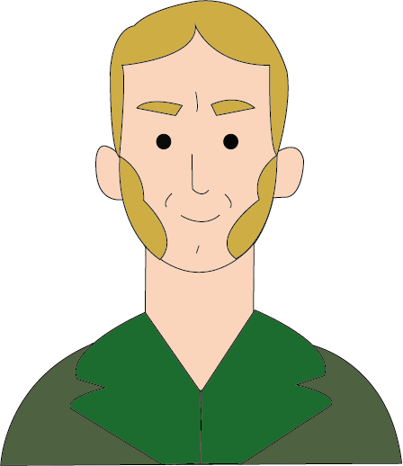

Caspar David Freidrich


Nascita:
5 Settembre 1774, Greifswald, Germania
Morte:
7 Maggio 1840, Dresda. Germania
Corrente:
Romanticismo



Opere più famose: Viandante sul mare di nebbia 1818; Donna al tramonto del sole 1818
Curiosità: All’età di 13 anni subì un grande trauma:mentre pattinava, il ghiaccio si ruppe e il giovane cadde in acqua; fu salvato dal fratello Johann Christoffer, che perse la vita in quell’occasione
Citazione: “Chiudi i tuoi occhi corporei, così potrai vedere la tua immagine innanzitutto con gli occhi dello spirito.”